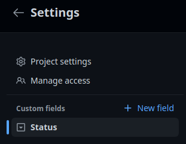
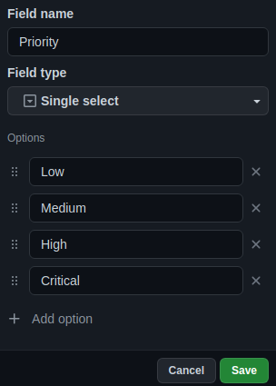
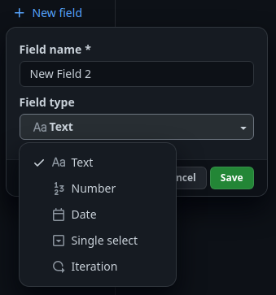

Campos de los ítems de GitHub Projects
Los campos son un componente muy importante de los proyectos y de sus ítems. Proporcionan metadatos muy útiles para clasificación, priorización y/o filtro.
Al finalizar, sabrá:
-
Qué es un campo.
-
Para qué sirven los campos.
-
Cómo crear campos personalizados.
-
Algunos campos personalizados recomendados.
-
Cómo filtrar los elementos de un proyecto asociados a un determinado valor de campo.
Introducción
Un campo (field) es una propiedad que proporciona información de un determinado aspecto. Los ítems de los proyectos tienen sus propios campos. Concretamente, es el proyecto el que define qué campos presentarán sus ítems e incluso puede determinar cuáles son sus posibles valores.
Atendiendo a quién define el campo, se clasifican en campos predefinidos y personalizados. Un campo predefinido (default field) es aquel que define GitHub en el momento de crear el proyecto. En cambio, un campo personalizado (custom field) es aquel que definimos nosotros mismos para el proyecto en cuestión.
Campos predefinidos
Un campo predefinido (default field) es aquel que viene con GitHub. Cada vez que creamos un proyecto en GitHub Projects, automáticamente se crean los siguientes campos:
| Campo | Descripción |
|---|---|
| Title | Título del ítem. |
| Assignees | Nombres de los responsables del ítem. |
| Status | Estatus actual del ítem, en un tablero, columna en la que se encuentra actualmente. |
Si el ítem se encuentra asociado a una propuesta (issue) también dispondrá de otros campos atados a la propia propuesta como, por ejemplo, Labels y Milestone.
A diferencia de las etiquetas predefinidas, que veremos más adelante tras presentar GitHub Issues, los campos predefinidos no se pueden borrar.
Campos personalizados
Por su parte, un campo personalizado (custom field) es aquel que definimos nosotros mismos para el proyecto. Atendiendo al tipo de datos que puede almacenar, se clasifican en campos textuales, numéricos, de fecha, de iteración y de selección simple.
Creación de campos personalizados
En primer lugar, vamos a ver cómo crear un campo y después pasaremos a analizar los distintos tipos:
-
Ir al proyecto.
-
Hacer clic en los tres puntos (
...), lo que mostrará un menú y seleccionar Settings para acceder a las opciones del proyecto. -
Hacer clic en + New field junto a Custom fields para crear un nuevo campo:

-
Rellenar el formulario, en nuestro caso, Priority como nombre, Single select como valor y las posibles prioridades en Options:

-
Hacer clic en Save para dar de alta el campo prioridad.
A partir de este momento, cuando edite un ítem podrá observar un campo Priority para fijar su prioridad.
Campos textuales y numéricos
Un campo textual (text field) es aquel que puede aceptar cualquier texto en cualquier ítem del proyecto. Mientras que un campo numérico (number field) aceptará un número cualquiera. Son campos abiertos cuyo valor, mientras sea del tipo correspondiente, puede ser cualquiera.
En la creación del campo, en el desplegable field type, seleccionaremos Text o Number:

Campos de selección única
Un campo de selección única (single select) es aquel que, dados unos valores predefinidos conocidos formalmente como opciones (options), se puede seleccionar uno cualquiera de ellos. Anteriormente, hemos visto cómo definir el campo Priority para fijar el nivel de prioridad o importancia del ítem como un campo de selección única donde sus posibles valores u opciones son Low, Medium, High y Critical. Cada opción, además de un texto, puede tener un color asociado. Extremadamente útil si el valor de la opción puede reflejar algo que fácilmente se puede identificar como importante o menos importante si le asociamos un color.
Campos de fecha
Un campo de fecha (date field) es aquel que espera que su valor sea una fecha. Si indicamos el tipo Date, para cada ítem se podrá indicar una fecha cualquiera. En cambio, si fijamos Iteration, estamos diciendo que habrá que seleccionar una iteración de uno de los intervalos que resulten de iterar a partir de esa fecha inicial dada a intervalos dados de tiempo.
Vamos a estudiar detenidamente los campos iterativos, pues los de tipo Date no nos deberían generar ningún tipo de misterio. En primer lugar, seleccionaremos Iteration, a continuación, una fecha de inicio y, para finalizar, una duración para cada intervalo, cada uno de los cuales se conocerá como iteración:

De manera predeterminada, se crean tres iteraciones. Podemos definir otras adicionales, incluso descansos (breaks) si fuera necesario. Para ello, una vez creado el campo, lo editaremos y le añadiremos manualmente las iteraciones faltantes. Ahora cuando seleccionemos un valor, deberemos indicar una de las iteraciones.
Análisis de nuestros propios campos
Un aspecto muy importante de todo proyecto es tener la información necesaria de cada ítem. Es la propia organización la que debe determinar qué campos debe haber en el proyecto. En nuestro caso, vamos a considerar los siguientes campos predefinidos, teniendo en cuenta que Status ya lo crea GitHub aunque aparezca entre los personalizados:
| Campos | Tipo | Descripción |
|---|---|---|
| Priority | Selección única | Nivel de importancia del ítem. |
| Origin | Selección única | Refleja a quién se le debe la creación del ítem. |
| When | Selección única | Cuándo se debe atender, desarrollar o implementar el ítem. |
| Complexity | Selección única | Complejidad que consideramos tiene su desarrollo o implementación. |
Vamos a analizar cada campo individualmente. Pero antes de continuar, por favor, eche un vistazo ilustrativo al siguiente proyecto https://github.com/users/akromio/projects/1. No hay nada como una imagen para asentar mejor lo que vamos a presentar a continuación.
Campo prioridad
La prioridad (priority) indica cómo de importante es su atención. No es lo mismo una propuesta con una baja prioridad que otra con una prioridad crítica como, por ejemplo, un fallo que está dejando el servicio inoperativo. Es importante que prioricemos los ítems para centrarnos en los más importantes por delante de los que tienen una menor preferencia. En nuestro caso, las opciones de prioridad son: Low, Medium, High y Critical.
Cuando aparece un ítem con prioridad crítica, la organización debe definir qué hacer. Una opción es dejarlo todo y ponernos de inmediato con ese ítem. O bien, cuando terminemos lo que estamos haciendo, elegir la crítica.
En Scrumban, existe un término conocido como clase de servicio (class of service) que indica cómo debe ser atendida la tarjeta. Generalmente, suele ser de manera normal, urgente o a fecha fija. Si en su proyecto puede ser útil, no dude en añadir también este otro campo.
Campo origen
El origen (origin) indica quién solicita lo indicado en el ítem, por si tuviéramos que obtener más información, saber dónde dirigirnos. En nuestro caso, distinguimos entre: IT, el equipo de IT o desarrollo; Product, el equipo de producto como, por ejemplo, el Product Owner o Marketing; o Stakeholder, una solicitud de una persona usuaria o del cliente.
Campo cuándo
El cuándo (when) indica en qué momento debe desarrollarse, lo que permitirá saber a qué iteración debería asignarse. Por ejemplo, en el proyecto Akromio, a un ítem se le puede asignar uno de tres tipos de valores:
-
Ninguno, en cuyo caso, no se sabe todavía cuándo se desarrollará.
-
Un año determinado, en este caso, sólo se sabe que durante el año indicado, no así el bimestre en cuestión.
-
Un bimestre dado, con este tipo de valor se sabe exactamente en qué iteración se debe atender el ítem.
Concretamente, para los años, en febrero de 2023, sólo existe 2023. Cuando esté cercano el fin de año y empiece a haber ítems para 2024, se creará la opción 2024. Para el año 2023, a su vez, se han creado las siguientes opciones: 2023/B1, 2023/B2, 2023/B3, 2023/B4, 2023/B5 y 2023/B6. Cuando se sabe exactamente el bimestre de 2023, se le asigna ese bimestre. Si se sabe que durante 2023, pero no en qué bimestre, se seleccionará la opción 2023.
Para poder centrar el foco en un determinado bimestre, el proyecto dispone de una vista donde se filtra por aquellos ítems cuyo valor es ese bimestre. Así, por ejemplo, en febrero, están disponibles la vista General, 2023/B1 y 2023/B2. Esta última para visualizar la carga que tendrá el siguiente bimestre.
Campo complejidad
La complejidad (complexity) hace referencia a lo complejo o complicado que parece ser su desarrollo. Personalmente, creo que es una cualidad muy subjetiva, lo que para uno puede ser complejo, para otro puede ser sencillo, muy influido por sus capacidades intelectuales, su formación, su experiencia y su conocimiento en el dominio del problema. Se intenta que sea objetivo, pero las capacidades de cada uno nos llevan a evaluar la complejidad de una cosa de manera completamente subjetiva, centrándonos en lo que a nosotros mismos nos parece.
La complejidad es por tanto una estimación subjetiva de lo complejo o complicado que será atender, desarrollar o implementar el ítem. Ayuda a comprender la magnitud de lo que hay que desarrollar. Existen varias formas de estimar esta complejidad, siendo las más frecuentes la de comparación, la de tiempo y la de tamaño.
La estimación por comparación consiste en fijar una cosa que represente un valor de partida que consideraremos de valor uno. A partir de ahí, intentaremos estimar la complejidad comparando con ese punto de partida, una vez, dos veces, tres veces, cinco veces, etc. Otra opción es la estimación temporal, aquella que determina cuánto tiempo en horas o días tardaremos. Y finalmente la estimación por tamaño, que viene a decir algo así como el tamaño de lo que tendremos que cambiar para llevarlo a cabo.
Generalmente, la gente se siente más cómoda con las estimaciones temporales y por tamaño. Aunque algunos Scrum Masters consideran que la mejor es la de comparación. Pero si el equipo no se siente cómodo con ese tipo, sus estimaciones tenderán a ser siempre malas. Más vale hacer una estimación con un método con el que todo el mundo se siente cómodo que con el que el Scrum Master considera mejor, siendo que este rol no realiza ninguna estimación.
Antes de continuar, la estimación no es un contrato. No es para meter pressing a la persona que atienda el ítem. Es tan solo un valor que debe ayudar a poder seleccionar, posteriormente, aquellos ítems que quepan en la iteración teniendo en cuenta el peso de cada una de ellas por su complejidad. Obviamente, debemos esforzarnos en hacer buenas estimaciones y no dejarnos llevar por el resto para evitar confrontaciones.
Si decide utilizar como complejidad el tiempo, puede indicar un campo numérico abierto o bien fijar varios valores como, por ejemplo, la secuencia de Fibonacci: 1, 2, 3, 5, 8, 13 y 21 horas. Otra opción es fijar tamaños de camisetas como, por ejemplo, XS, S, M, L y XL, teniendo que conocer cuánto representa cada valor.
Por lo general, la complejidad, si estamos usando Scrum, la suele fijar el equipo de desarrollo en la reunión de refinamiento. Puede ser a mano alzada o mediante planning poker. En esta última forma, cada persona del equipo dispone de una baraja de cartas especial cada una de ellas con un valor de la secuencia de Fibonacci, desde 0 a 89. Aunque se puede reducir la baraja a los primeros números de la secuencia como, por ejemplo, hasta 21 ó 34. También es posible encontrar barajas con 0, 1, 2, 3, 4, 8, 20, 40 y 100. A partir de ahí, se expone la tarea, se hacen las preguntas necesarias para concebir lo que hay que hacer y, a la de tres, todos ponen encima de la mesa su estimación. La idea es que el valor de complejidad se ponga por consenso. Para ello, los que ponen valores más bajos y más altos explican por qué han decidido ese valor. Esto abre un pequeño debate que puede llevar a que tanto esas personas como el resto del equipo ajusten sus estimaciones. Es un proceso participativo en la que podemos cambiar de opinión si con las argumentaciones dadas consideramos que debemos indicar otro valor más acorde.
Si el proyecto es personal o es un proyecto de código abierto donde la realización de los refinamientos es difícil de llevar a cabo por la dificultad de conseguir reunir a los participantes, la complejidad la puede definir el líder del equipo, pero no atendiendo a su conocimiento sino teniendo en cuenta el conocimiento que tiene el promedio de las personas que participan en el desarrollo.
Lo importante es no olvidar que son estimaciones.
Filtrado de ítems de un proyecto por valor de campo
Es posible que necesitemos filtrar aquellos ítems del proyecto que tengan un determinado valor para un campo. Es muy sencillo. Basta con ir al proyecto, hacer clic en el valor en cuestión en cualquier ítem que lo tenga. Automáticamente, añadirá el predicado nombreCampo:valor al filtro. También puede añadir este predicado directamente al filtro.
Si añade varios predicados al filtro, recuerde que sólo se mostrarán aquellos que cumplan todos ellos.